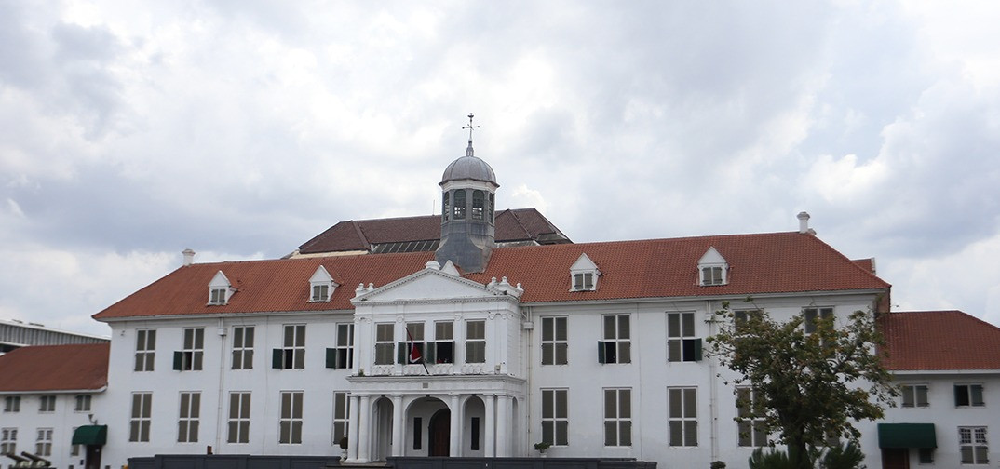
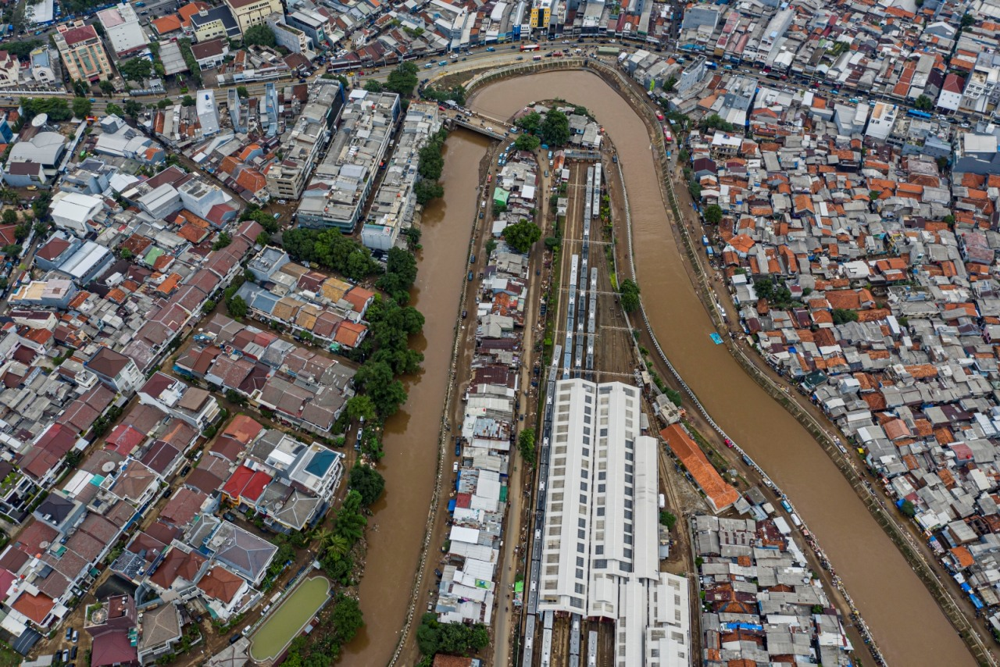
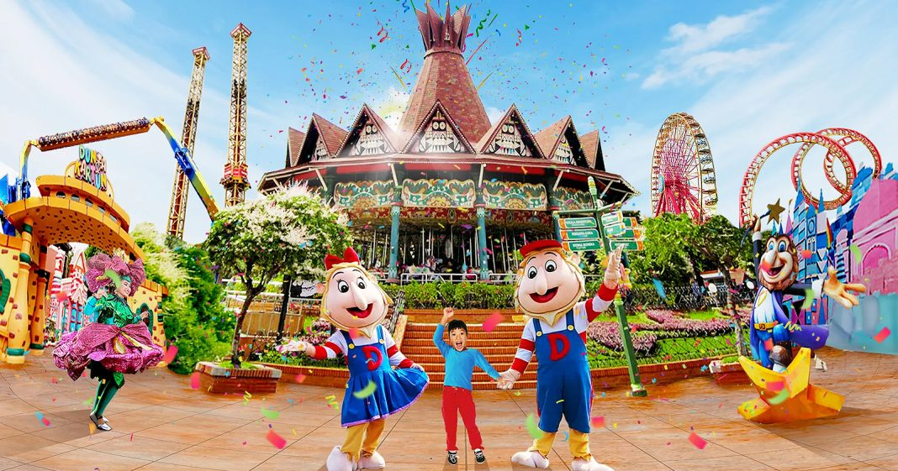
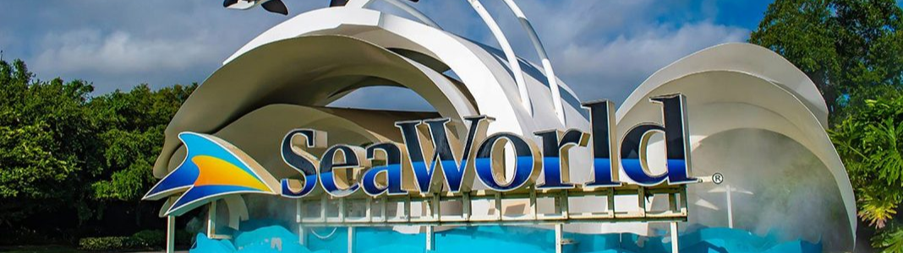
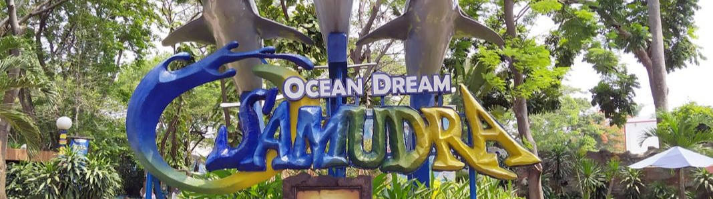
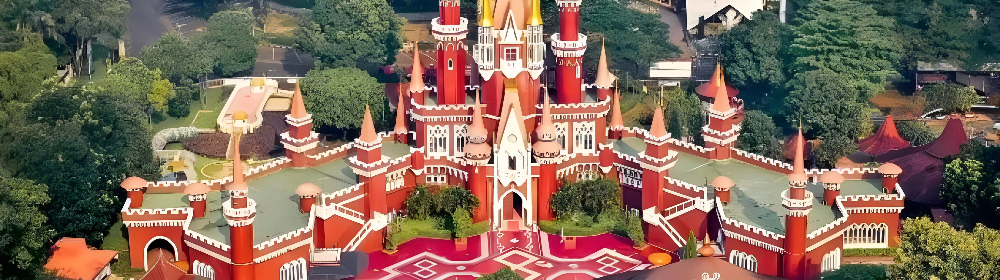

Sejarah Jakarta

Jakarta berawal dari pelabuhan kecil di estuari sungai Ciliwung 500 tahun lalu.
Dikenal sebagai Kalapa dan kemudian Jayakarta, kota ini berubah saat Belanda mengambil
alih pada abad ke-16, menamainya Batavia. Setelah kemerdekaan Indonesia pada 1945,
Batavia diubah namanya menjadi Jakarta. Sebagai ibu kota, Jakarta berkembang pesat dengan
pusat politik, pemerintahan, dan bisnis. Hari ini, Jakarta adalah megapolitan global dengan
kehidupan perkotaan yang semarak dan keragaman budaya yang kaya.
Riwayat panjang Kota Jakarta penuh dengan cerita. Mulai dari masa kerajaan hingga bertransformasi menjadi kota global.
- Abad ke-14, bernama Sunda Kalapa dan menjadi pusat pelabuhan kerajaan Padjadjaran.
- 22 Juni 1527, penyerangan pangeran Fatahillah ke Sunda Kalapa dan berubah nama menjadi Jayakarta.
- 4 Maret 1621, Belanda mulai mendirikan pemerintahan kolonial dan menamakannya Stad Batavia.
- 1 April 1905, pemerintah kolonial Belanda merubah nama menjadi Gemeente Batavia.
- 8 Januari 1935, pemerintah kolonial Belanda merubah nama menjadi Stad Gemeente Batavia.
- 8 Agustus 1942, pasukan Jepang tiba di Batavia dan merubah namanya menjadi Jakarta Tokubetsu Shi.
- September 1945, Jakarta menjadi pusat politik dan pemerintahan Indonesia dengan nama Pemerintah Nasional Kota Jakarta.
- 28 Maret 1950, Pemerintah RI merubah nama Jakarta menjadi Praj’a Jakarta.
- 22 Juni 1956, Wali Kota Jakarta kembali mengukuhkan nama menjadi Jakarta.
- 18 Januari 1958, Jakarta menjadi daerah otonom dengan nama Kotamadya Djakarta Raya yang berada di bawah Provinsi Jawa Barat.
- 1959, Jakarta berubah statusnya menjadi Daerah Tingkat Satu (Provinsi) yang dipimpin Gubernur.
- 1961, Status Jakarta dari Daerah Tingkat Satu kembali diubah menjadi Daerah Khusus Ibu Kota (DKI).
- 31 Agustus 1964, Ibu Kota Jakarta Raya resmi menjadi Ibu Kota Negara Republik Indonesia dengan nama Jakarta.
- 31 Agustus 1999, status Jakarta kemudian diperbarui menjadi pemerintah provinsi sesuai dengan Undang-Undang Nomor 34 Tahun 1999 tentang Pemerintahan Propinsi Daerah Khusus Ibukota Negara Republik Indonesia Jakarta dengan status otonomi yang memiliki kota administrasi.
- 30 Juli 2007, Melalui Undang-Undang Nomor 29 Tahun 2007 tentang Pemerintah Provinsi Daerah Khusus Ibuokta Jakarta sebagai Ibukota Negara Kesatuan Republik Indonesia, Jakarta berganti nama menjadi DKI Jakarta serta mengukuhkan status sebagai daerah otonomi khusus ibukota.
Geografis

Ibu kota Indonesia, terletak di pesisir utara Pulau Jawa. Kota ini dikelilingi oleh
sungai-sungai besar seperti Ciliwung dan Cisadane. Namun, ketinggian rendahnya menyebabkan
sering dilanda banjir, terutama saat musim hujan. Meskipun demikian, memiliki keindahan
alam yang unik, dengan pantai-pantai dan pelabuhan yang menjadi daya tarik. Dengan pertumbuhan
ekonomi yang pesat, telah menjadi pusat bisnis, budaya, dan politik yang penting di Asia Tenggara.
Selain itu, Jakarta juga dikenal dengan keberagaman budaya dan kuliner yang kaya. Kota ini merupakan
pusat politik dan ekonomi, menarik banyak pengusaha dan wisatawan setiap tahun.
Wisata
Jakarta menawarkan beragam destinasi wisata, mulai dari taman kota hingga museum
dan pusat perbelanjaan. Keindahan budaya dan kuliner yang khas juga menjadi daya
tarik utama bagi pengunjung.
Dunia Fantasi

Dunia Fantasi atau lebih sering disebut Dufan adalah salah satu tempat wisata di Jakarta Utara,
bahkan di seluruh Jakarta, yang paling sering dikunjungi setiap tahunnya. Bukan hanya anak-anak
yang sering berkunjung ke Dufan, tapi remaja dan dewasa pun menikmati berbagai wahana di dalamnya.
Sea World

Kalau sudah berada di dalam Taman Impian Jaya Ancol, sayang kalau sampai nggak
masuk ke Sea World yang ada di J. Lodan Timur No. 7 RW 10, Ancol. Luas Sea World
sendiri mencapai 3 hektar, sementara luas bangunannya mencapai 4.500 meter persegi.
Tentu fasilitas yang paling menarik adalah akuarium raksasa, di mana terdapat ikan
kecil hingga ikan sangat besar di dalamnya.
Ada sekitar 3.5000 ekor satwa laut dari spesies yang sangat beragam. Kalau beruntung,
kita bisa melihat atraksi pemberian makan ikan di akuarium besar. Selain itu, di
dalamnya juga ada glow theatre, terapi ikan dokter, dan masih banyak lagi fasilitas
mendidik lainnya yang menarik.
Ocean Dream Samudra

Masih berada di Taman Impian Jaya Ancol, salah satu themepark yang menarik
adalah Ocean Dream Samudra. Di sini sering diadakan pertunjukan langsung dari
pinggir kolam lumba-lumba yang menarik ditonton bareng anak-anak. Pastikan datang
ke Jl. Lodan Timur No. 7 RW 10 Ancol untuk menikmati pertunjukan serunya.
Taman Mini Indonesia

Taman Mini Indonesia Indah (TMII) merupakan destinasi wisata terkenal di Jakarta,
menampilkan miniatur dari berbagai budaya dan bangunan ikonik Indonesia.
Pengunjung dapat menjelajahi paviliun-paviliun yang mewakili provinsi-provinsi
di Indonesia serta menikmati pertunjukan budaya dan kegiatan interaktif lainnya.
TMII juga menawarkan taman rekreasi, museum, dan fasilitas lainnya yang membuatnya
menjadi tempat yang ideal untuk belajar dan bersenang-senang bagi seluruh keluarga.